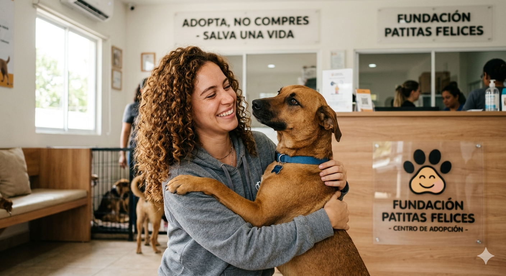
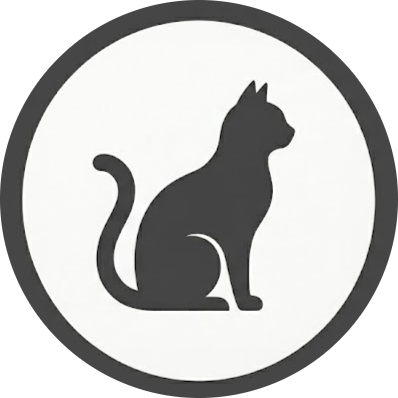

¿Perdiste o encontraste una mascota? Llama al (702) 555-GUAU para recibir ayuda
¿Perdiste o encontraste una mascota? Llama al (702) 555-GUAU para recibir ayuda
Al adoptar en la Fundación Patitas Felices, transformas la vida de un animal rescatado y nos permites seguir salvando a otros en riesgo. Para iniciar el proceso, debes completar el formulario de solicitud, presentar una identificación oficial, demostrar que posees un espacio adecuado y realizar una donación de 15 dólares, la cual se destina directamente a los gastos médicos y de alimentación de los demás rescatados que aún esperan un hogar.


Ver gatos en adopciónSi ya estás decidido por una adopción y cumples con los requisitos, completa el siguiente formulario por favor.